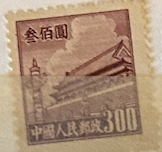
| SOURCE | TITLE| IMAGE MATCH | click to source page |
| www.ebay.com | North East China - 1950 Tiananmen - Gate of Heavenly Peace | 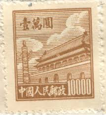 |
| www.ebay.com | People's Republic of China Scott #67 Mint No Gum As Issued ... | 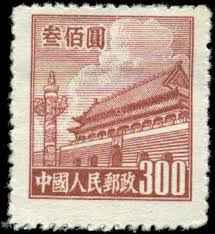 |
| www.etsy.com | Postage Stamps,set of 8 ,gate of Heavenly Peace,pcr,china - Etsy |  |
| www.ebay.com | PRC China Stamps: 1950 Gate of Heavenly Peace. 1st Issue SC ... |  |
| www.amazon.com | 1950 PRC RARE 1950 COMMUNIST CHINA GATE of HEAVENLY PEACE ... |  |
| www.hipstamp.com | China, Peoples Republic, Gate of Heavenly Peace, 10,000 ... | 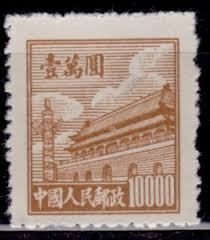 |
| worldstampsproject.org | China-Gate-of-Heavenly-Peace-stamp-1950-06 – World Stamps ... |  |
| www.kenmorestamp.com | Gate of Heavenly Peace - PRC #211 | 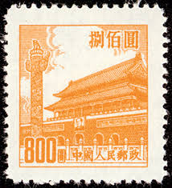 |
| findyourstampsvalue.com | NORTHEAST CHINA: Gate of Heavenly Peace - 中国东北: 东北贴用 ... |  |
| www.dreamstime.com | Postage Stamp Printed in China Shows Gate of Heavenly Peace ... |  |
| www.xabusiness.com | R1 Scott 12-20 Regular Issue with Design of Tian An Men (1st ... | 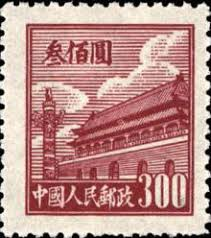 |
| www.alamy.com | MOSCOW, RUSSIA - DECEMBER 7, 2020: Postage stamp ... | 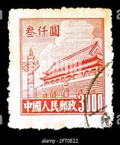 |
| www.etsy.com | 1949 China Stamp - Northeast Liberation Area, Lantern Over ... | 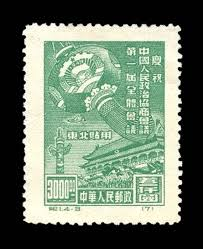 |
| www.flickr.com | China forbidden palace sml (800) | Mark Morgan | Flickr | 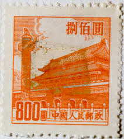 |
| www.ebay.com | China - Northeast China - 1950 Tiananmen - Gate of Heavenly ... | 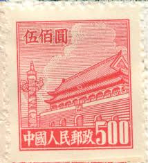 |
| www.bwdavis.us | WW China, Peoples Rep. of - Collectibles of Bwdavis | 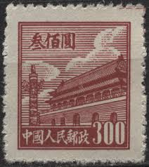 |
| www.ourchinastory.com | China began issuing nationwide unified postage stamps ... | 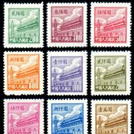 |
| www.hipstamp.com | People's Republic of China 1950 Sc 23 Gate of Heavenly ... | 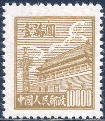 |
| www.kenmorestamp.com | Gate of Heavenly Peace - PRC #94 |  |
| findyourstampsvalue.com | NORTHEAST CHINA: Gate of Heavenly Peace - 中国东北: 东北贴用 ... | 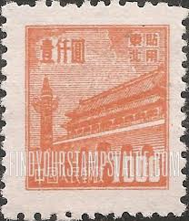 |
| www.freestampcatalogue.com | Stamps from China People's Republic - Freestampcatalogue.com ... | 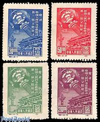 |
| touchstamps.com | Stamp: Gate of Heavenly Peace (China, People's Republic 1951 ... |  |
| www.instagram.com | In 1949, with the founding of the People's Republic of China ... |  |
| www.shutterstock.com | 3+ Thousand Beijing Stamp Royalty-Free Images, Stock Photos ... |  |
| www.xabusiness.com | R5 Scott 95-100 Regular Issue with Design of Tian An Men ... | 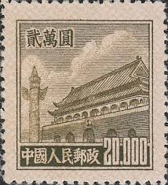 |
| cpi.chinapost.com.cn | 天安门图案普通邮票(第三版) - 中国集邮有限公司 | 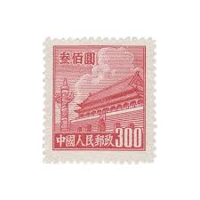 |
| www.hipstamp.com | People's Republic of China 1951 Sc 93 Gate of Heavenly Peace ... | 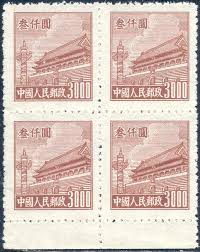 |
| picclick.co.uk | RARE , CHINA Stamp 20.000 Gate Of Heavenly Peace 1950, £1.00 ... |  |
| sazo.shop | 中国の切手)1954年紫禁城スタンプ | 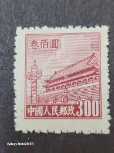 |
| www.lastdodo.com | Stamps from China - People's Republic Stamp catalogue - LastDodo | 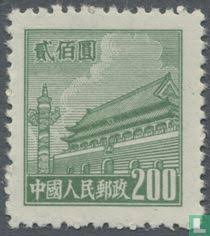 |
| www.ebay.com | PRC China Stamps: 1950 Gate of Heavenly Peace. 1st Issue SC ... |  |
| stampencyclopedia.miraheze.org | Tienanmen definitives - Stamp Encyclopedia | 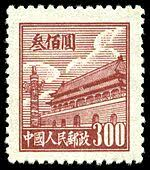 |
| prcchinastamps.com | Products – PRCStamps | 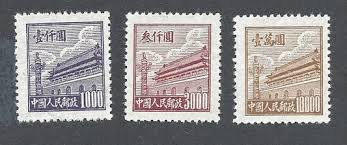 |
| worldstampsproject.org | China-Gate-of-Heavenly-Peace-stamp-1950-02 – World Stamps ... |  |
| jp.mercari.com | 切手 『 未使用 中国切手 天安門切手 3枚 』 中国人民郵政 ... | 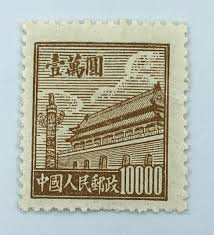 |
| findyourstampsvalue.com | NORTHEAST CHINA: Gate of Heavenly Peace - 中国东北: 东北贴用 ... | 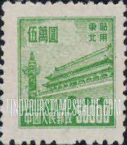 |
| www.cnpai.net | 真伪对比“中国假邮第一案”的邮票,到底多完美？-热点话题-炒邮网 ... |  |
| www.kenmorestamp.com | China Post Office - 1947 Complete Mint Set of 5 | 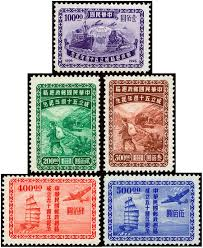 |
| allnationsstampandcoin.com | China Stamps | All Nations Stamp and Coin | 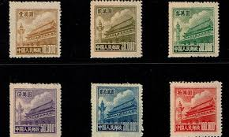 |
| www.facebook.com | Republic of China five-dollar postage stamp |  |
| www.tradera.com | Se produkter som liknar Kina 1954 - 250 dollar.* på Tradera ... | 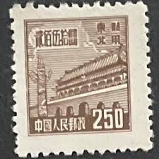 |
| www.mysticstamp.com | CB107 - China Stamps - Mystic Stamp Company | 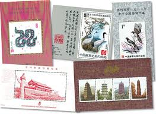 |
| www.stampcollectingblog.com | Some Chinese postage stamps – cancellation forgeries or ... | 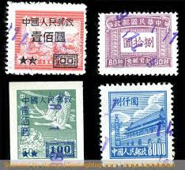 |
| cpi.chinapost.com.cn | 天安门图案普通邮票(第五版) - 中国集邮有限公司 |  |
| www.worthpoint.com | North East China (People's Post) Stamps (1946 - 1950 ... | 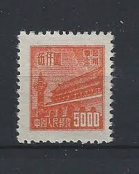 |
| www.carousell.com.my | 500 CHINA STAMPS (1pcs RM10 ), Hobbies & Toys ... | 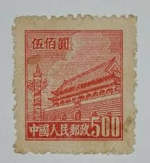 |
| www.bidcurios.com | 1950 China 300 Yuan "Gate of Heavenly Peace" MNH Stamp ... | 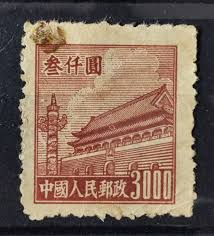 |
| www.mysticstamp.com | M12313 - Formosa - 85 used stamps - Mystic Stamp Company | 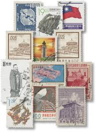 |
| www.ebay.com | $10000 Gates of Heavenly Peace SC#23 A5 ~ China Post No. R1 ... | 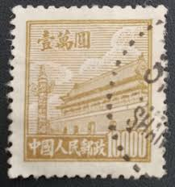 |
| www.linns.com | Rare unissued PRC 1956 Gate of Heavenly Peace with sun rays ... | 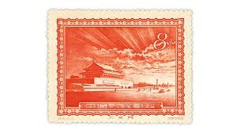 |
| www.hipstamp.com | 1950 China Stamp: Sc#21-3, Gate of China MNH Complete SET ... | 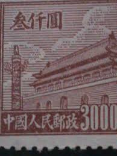 |
| www.postbeeld.com | Stamps from China People's Republic - PostBeeld - Online ... |  |
| www.shutterstock.com | China Circa 1950 Post Stamp Printed Stock Photo 355967171 ... | 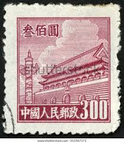 |
| findyourstampsvalue.com | NORTHEAST CHINA: Gate of Heavenly Peace - 中国东北: 东北贴用 ... | 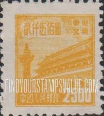 |
| www.alamy.com | Stamp texture square hi-res stock photography and images - Alamy |  |
| www.youtube.com | Most Expensive Stamps Of China Empire - Part 3 | Rare ... | 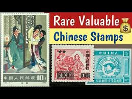 |
| www.etsy.com | Vintage R.O.C. Chinese Stamp, 1896-1946, 100, Train and Ship ... | 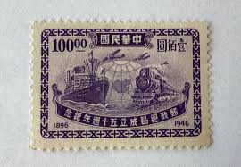 |
| worldstampsproject.org | People's Republic of China – varieties of postage stamps ... | 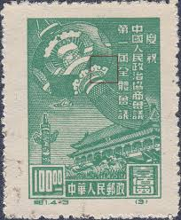 |
| www.ebay.com | China (PR) #95 used | eBay | 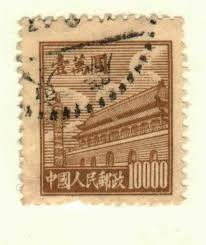 |